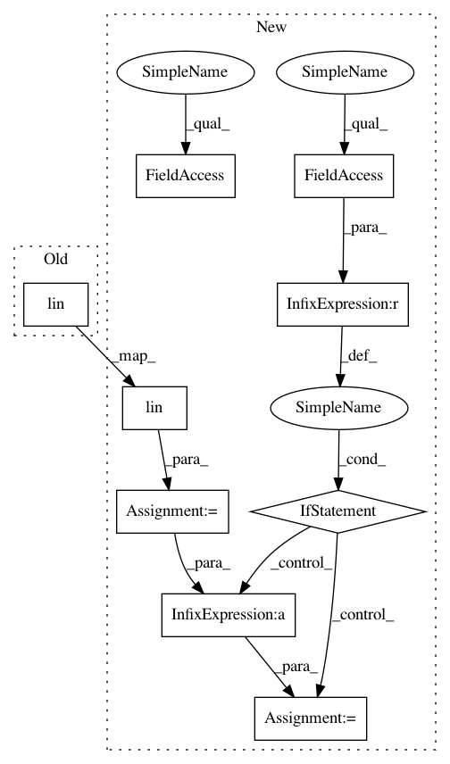

341058a3c32de0696132e6e6522b45fca63f81c2,torch_geometric/nn/conv/gmm_conv.py,GMMConv,forward,#GMMConv#Any#Any#Any#,81
Before Change
out = self.propagate(edge_index, x=x, pseudo=pseudo)
out = self.lin(out)
if self.root is not None:
out = out + torch.matmul(x, self.root)
return out
After Change
x = x.unsqueeze(-1) if x.dim() == 1 else x
pseudo = pseudo.unsqueeze(-1) if pseudo.dim() == 1 else pseudo
out = self.lin(x).view(-1, self.kernel_size, self.out_channels)
out = self.propagate(edge_index, x=out, pseudo=pseudo)
if self.root is not None:
out = out + torch.matmul(x, self.root)
if self.bias is not None:
out = out + self.bias
return out
def message(self, x_j, pseudo):
(E, D), K = pseudo.size(), self.mu.size(0)
In pattern: SUPERPATTERN
Frequency: 3
Non-data size: 9
Instances
Project Name: rusty1s/pytorch_geometric
Commit Name: 341058a3c32de0696132e6e6522b45fca63f81c2
Time: 2019-06-17
Author: shunwang.gong16@imperial.ac.uk
File Name: torch_geometric/nn/conv/gmm_conv.py
Class Name: GMMConv
Method Name: forward
Project Name: rusty1s/pytorch_geometric
Commit Name: 341058a3c32de0696132e6e6522b45fca63f81c2
Time: 2019-06-17
Author: shunwang.gong16@imperial.ac.uk
File Name: torch_geometric/nn/conv/gmm_conv.py
Class Name: GMMConv
Method Name: forward
Project Name: rusty1s/pytorch_geometric
Commit Name: 11bc3dcca12325a4247988a43ae1703cdedce373
Time: 2019-04-29
Author: matthias.fey@tu-dortmund.de
File Name: torch_geometric/nn/conv/gmm_conv.py
Class Name: GMMConv
Method Name: forward
Project Name: rusty1s/pytorch_geometric
Commit Name: 401e194d78492271e2eb66ad8e16930302dcbe53
Time: 2019-06-17
Author: matthias.fey@tu-dortmund.de
File Name: torch_geometric/nn/conv/gmm_conv.py
Class Name: GMMConv
Method Name: forward